Setup
Attaching Contact Microphones to Tone Chimes
Attach an adhesive like Blu-Tack to the center of the metal surface of the contact microphone, then press and fix it to the tone chime.
The microphone needs to be fixed in a position where hands or body do not directly touch it, and where it does not stop the vibration of the tone chime itself.
Therefore, as shown in the image, attach it to the back of the hammer's base (the plate where the note name is written) as a rule. If it is too high, the tone chime itself won't sound, and if it is too low, the volume picked up by the microphone will be too small.
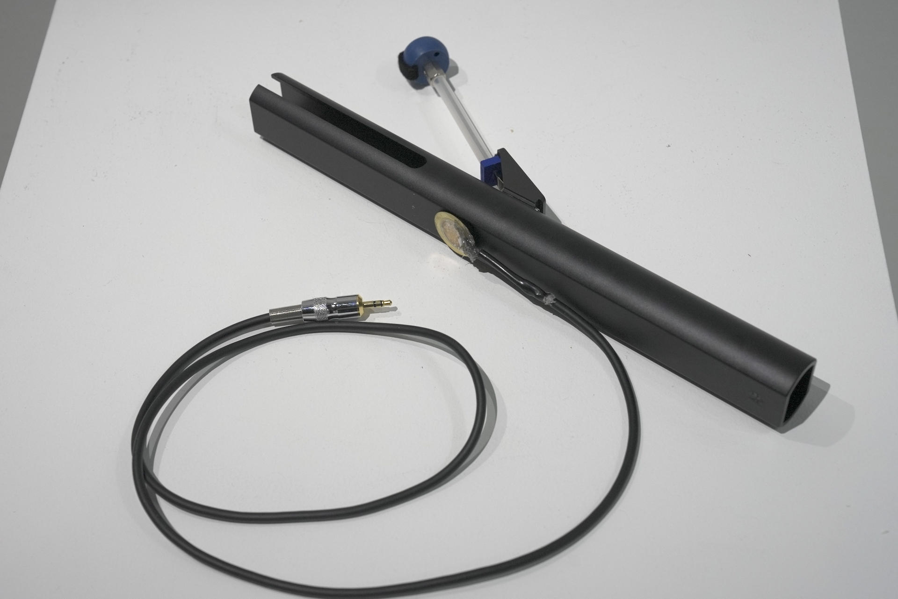
If using a 3D printed cover, you can secure it by pressing in the cover, but do not forget to attach adhesive between the microphone and the tone chime in this case as well.
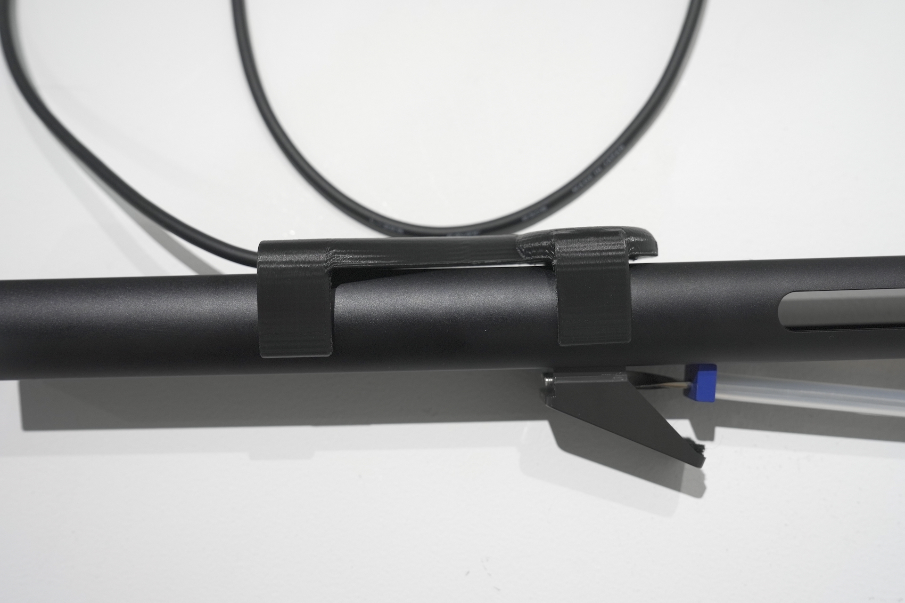
Overall Wiring Diagram
Wired Version, 1 Tone Chime and 1 Light Setting
![Diagram of the overall system configuration. The system consists of one tone chime, lighting and video, all connected by cable. The tone chime and contact microphone are on the left side. The audio interface is connected to the cable that extends from there. The computer in the center of the image is connected by cable. Two cables extend from the computer to the right, and a display or projector is connected to the top right. On the bottom right, a DMX dimmer is connected via a USB-DMX converter, and a light bulb is connected to one of the four sockets.](../../img/VisVib_diagrams.png)
Wireless Version, 1 Tone Chime and 1 Light Setting
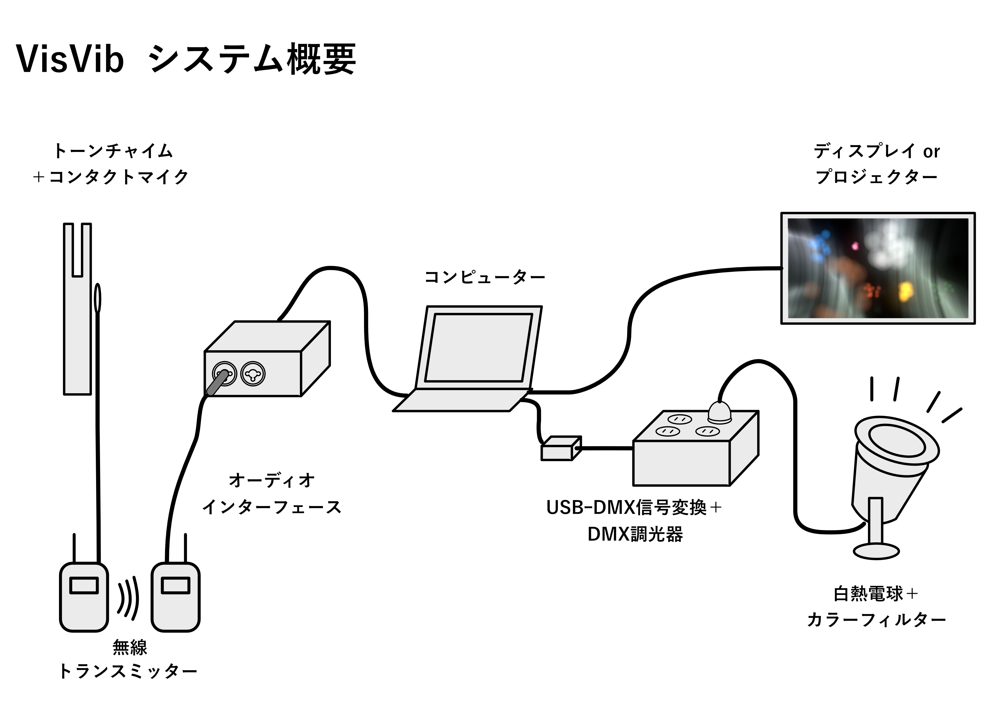
Audio Connections
Connect the microphones to the audio interface. Many interfaces have input terminals for channels 1 and 2 on the front of the device, so for a 2-channel configuration, input the microphones there.
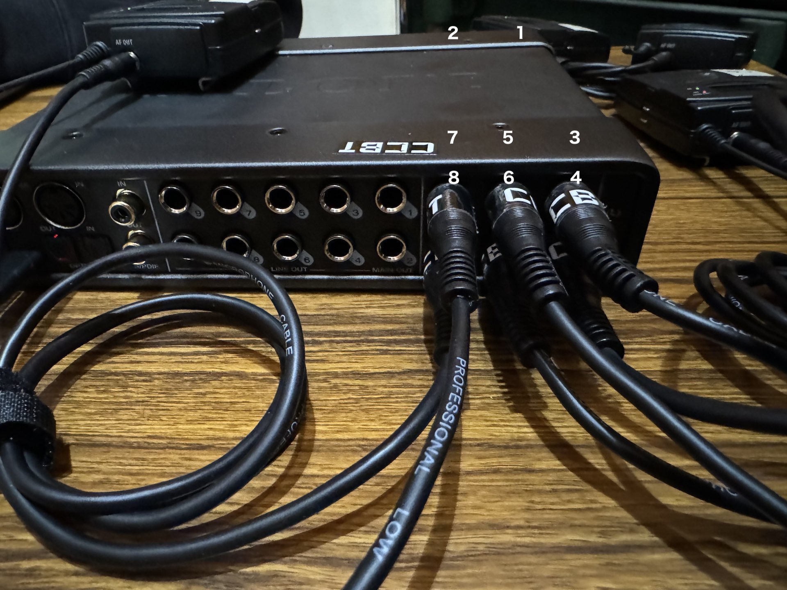
The MOTU UltraLite Mk5 has inputs for channels 1 and 2 on the front, and inputs for channels 3 to 8 on the back.
For Wired Connection
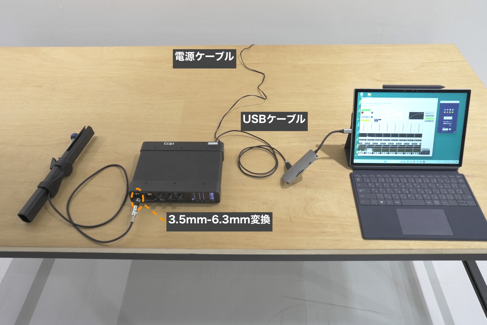
Directly plug the microphone attached to the tone chime into the input of the audio interface. The microphone plug is a 3.5mm plug, but since the input of the audio interface we're using is a 6.3mm plug, we use a conversion adapter.
For Wireless Connection
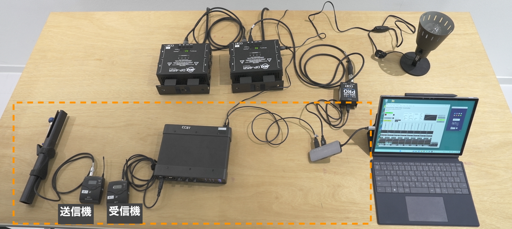
Plug the microphone attached to the tone chime into the input of the transmitter side (the one with the "MUTE" switch on top is the transmitter).
Connect from the receiver of the transmitter to the input of the audio interface using a 3.5mm plug to 6.3mm plug cable.
Lighting Connections
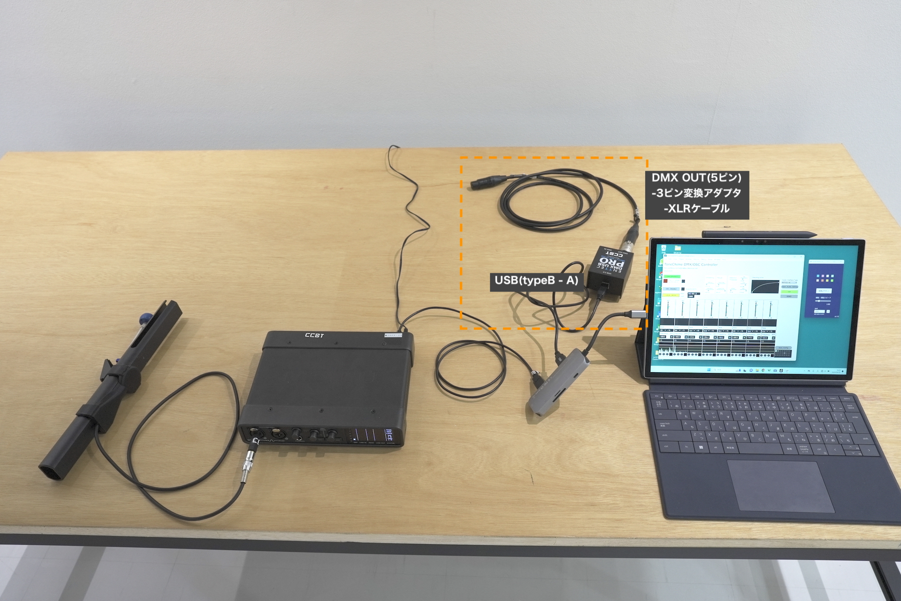
Connect the computer and DMX USB PRO with a USB cable. Connect an XLR 5-pin to 3-pin conversion plug to the "DMX OUT" terminal of the DMX USB PRO, and connect an XLR cable there.
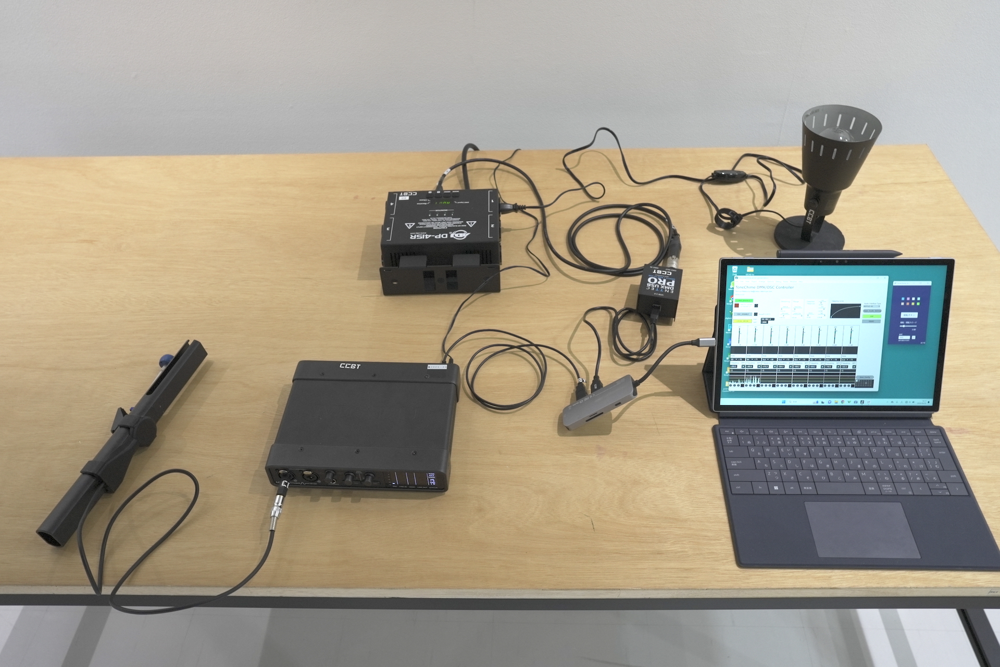
Connect the other end of the XLR cable to the DMX in of the dimmer.
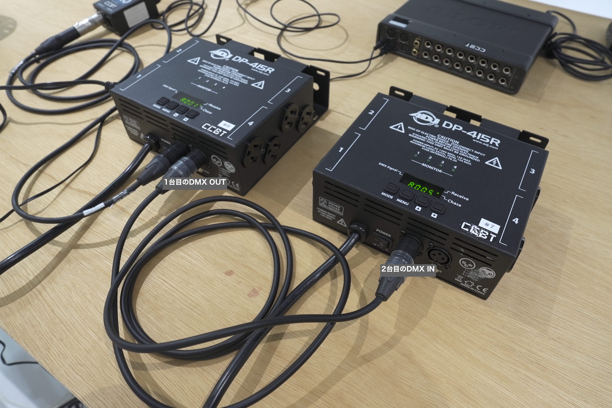
For an 8-unit configuration (2 dimmers), connect an XLR cable (3-pin) from the DMX OUT terminal of the first dimmer pack to the DMX IN terminal of the second. Connect the dimmers to power and turn the power ON.
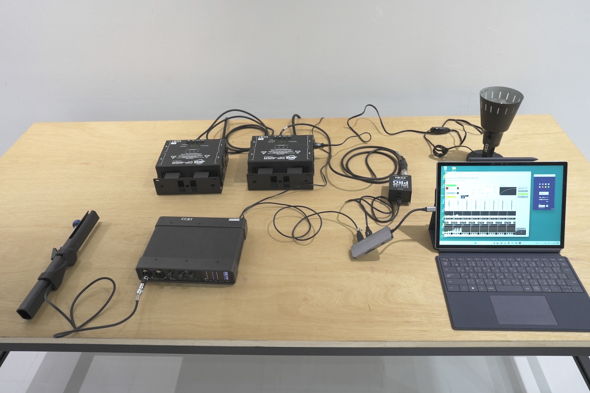
For a 2-dimmer configuration, the overall connection will look like the image above.
DMX Channel Settings
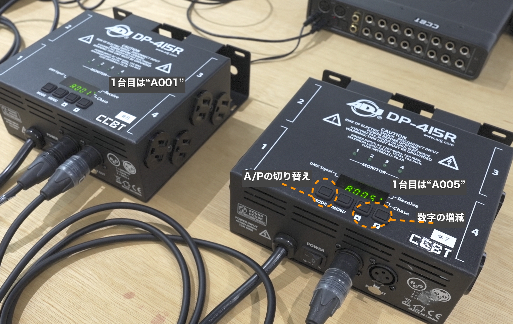
At startup, check that the display of the first unit shows A001. If the first character is not A, press the "MODE" button to switch. If the number is not 001, use the ▲ ▼ buttons to change the value to 001.
If using two dimmer packs, set the second one to A005.
Connecting the Bulbs
If attaching filters etc. to the bulbs, do this before turning on the power. (After the lights are on, the bulbs become hot, so it's dangerous to touch them directly.)
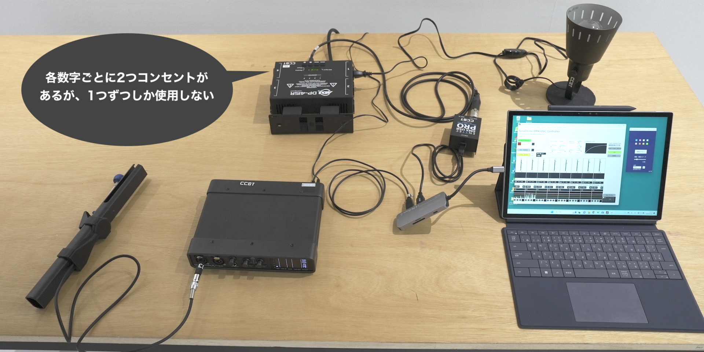
Connect the incandescent bulbs to the dimmer's outlets. The DP-415R has 8 outlets, but since there are 2 outlets per channel, you actually use up to 4 outlets. For a 2-unit configuration, connect to the places numbered 1 and 2 (it doesn't matter which one you connect to as long as it is the same channel.)
For an 8-unit configuration, treat 1 to 4 of the first unit as 1 to 4, and 1 to 4 of the second unit as 5 to 8.
If the clip lights you're using have power switches, turn them on in advance.
Connecting the Display
Connect the display or projector to the computer with an HDMI cable or similar.
For Windows
Right-click on the Windows desktop, open "Display settings", and in the multi-display section, select "Extend these displays".
For macOS
Open Apple menu → System Preferences → Displays, select the external display, and choose "Extended Display" from "Use as".